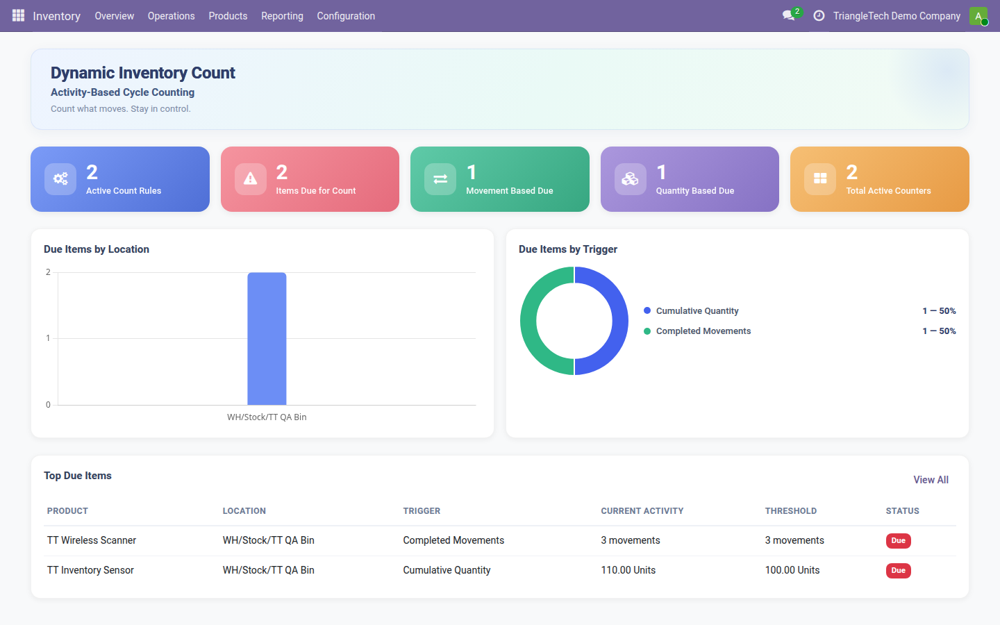
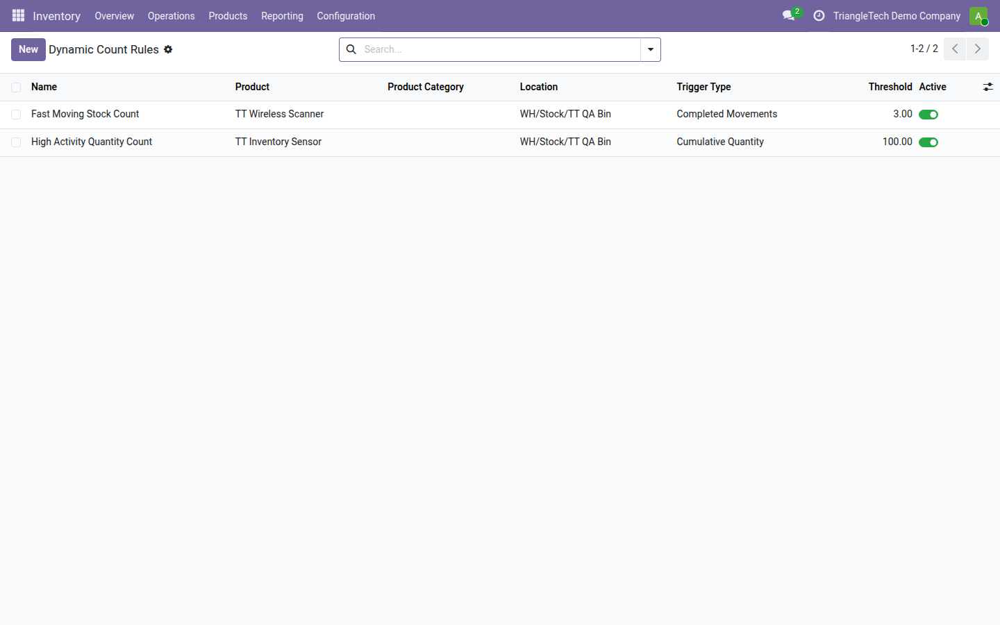
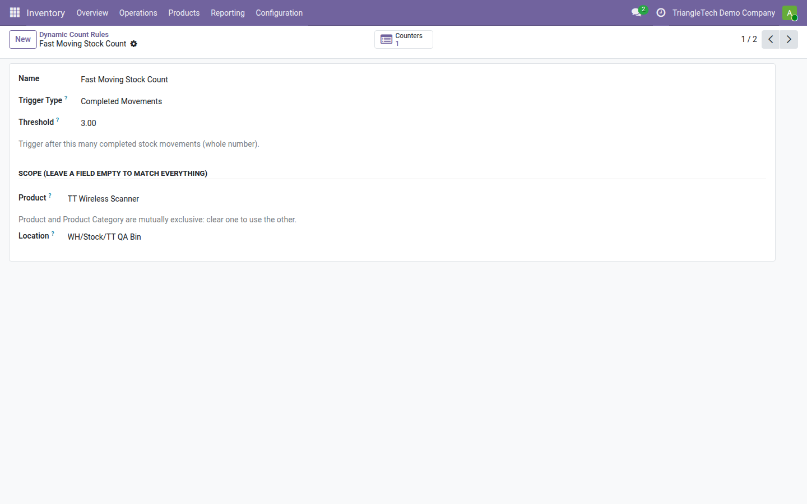
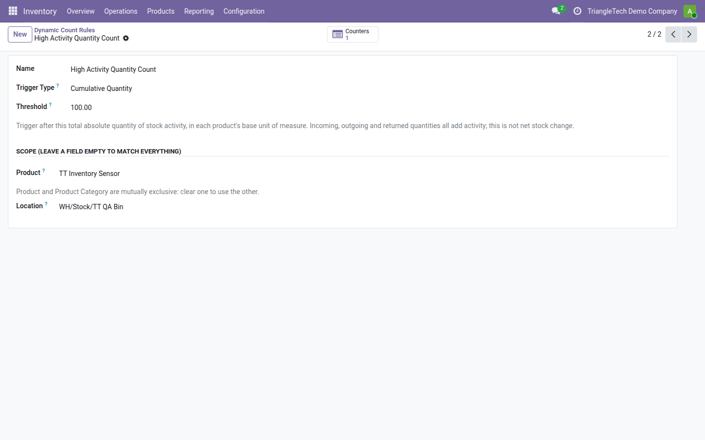
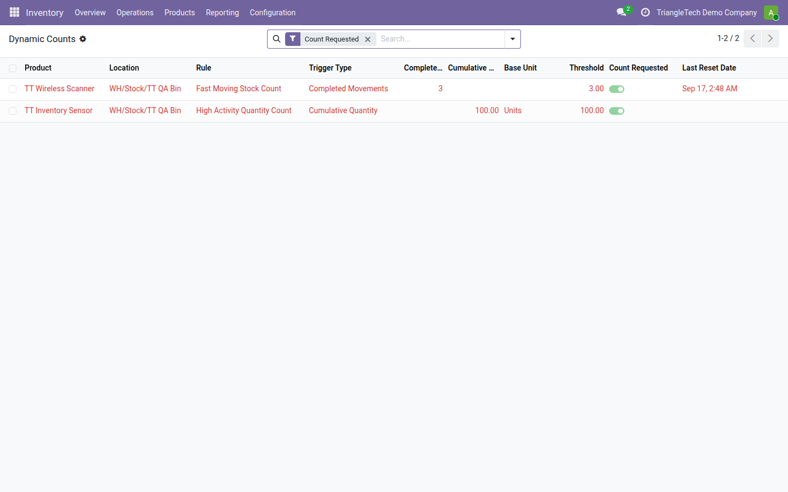
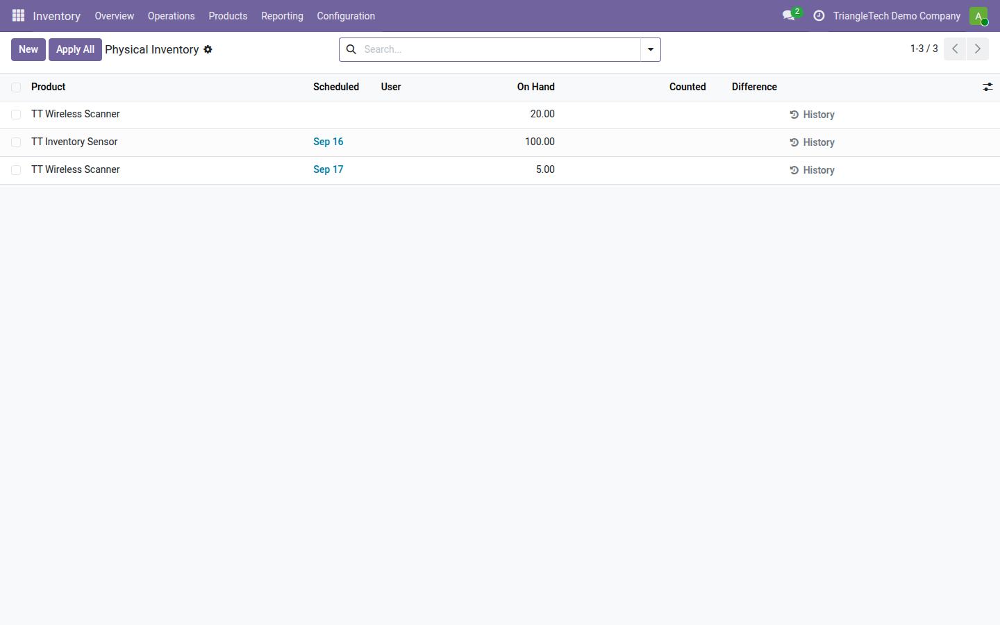
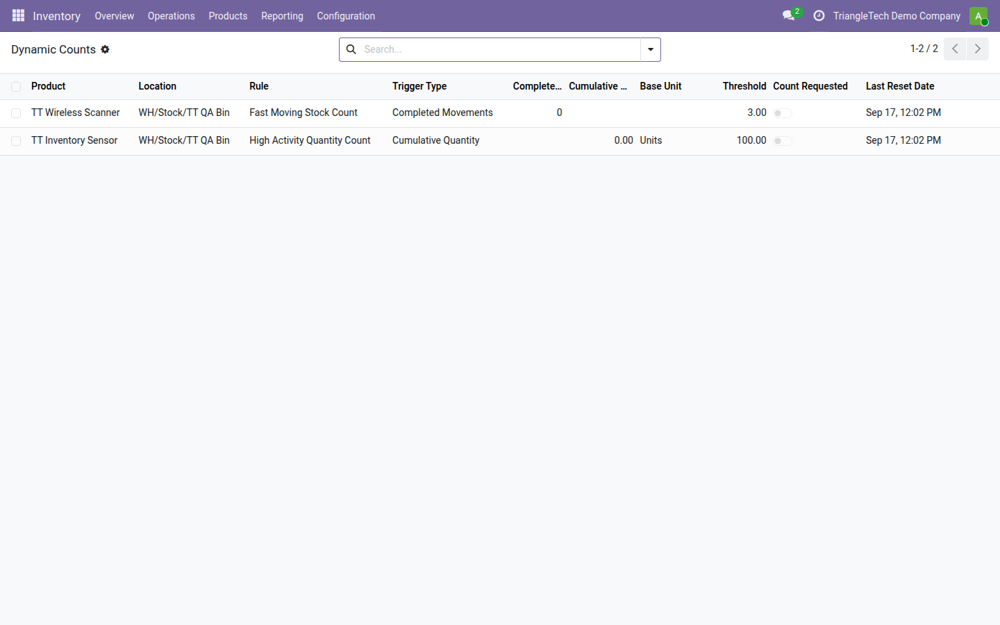

Count inventory based on actual stock activity — not only fixed calendar schedules.
Automatically identify Product + Location combinations that need physical counting based
on completed movements or cumulative stock activity.
Dashboard
A dedicated dashboard gives stock managers an at-a-glance view of counting activity:
active rules, items currently due for a count, which trigger type is driving each item,
and where due items are located.

Activity-Based Inventory Counting DashboardSee active rules, items due for count, trigger types, locations, and current activity at a glance.
Due Items by Location — a bar chart of how due items are distributed across locations.
Due Items by Trigger — a breakdown of due items by Completed Movements vs. Cumulative Quantity.
Top Due Items — a table of the current due product/location pairs, with trigger, current activity, threshold, and status.
Dashboard tiles and chart segments are clickable, navigating directly to the underlying filtered list.
How It Works
An administrator defines one or more Dynamic Count Rules, each
scoped optionally by product, product category, and/or location, with a trigger
type and threshold.
As stock moves complete (receipts, deliveries, internal transfers, returns),
matching rules accumulate activity in a per-product/location
Dynamic Count Counter.
When a counter's accumulated activity reaches its rule's threshold, that
product/location combination is flagged as requiring a count.
The count surfaces through Odoo's native Physical Inventory workflow, where
stock managers apply the count as usual.
After a successful physical inventory application, the relevant counter
resets and begins accumulating again.
Two Activity Triggers
Move Count
Completed Movements
Counts the number of completed stock moves for a product at a location.
Once the configured whole-number threshold is reached, a count is requested.
Cumulative Quantity
Cumulative Activity Quantity
Sums the absolute quantity moved (not net change) for a product at a location,
normalized to that product's base unit of measure. Once the configured
threshold quantity is reached, a count is requested.
Native Odoo Integration
This module does not introduce its own counting UI. Instead, it works with Odoo's
existing Physical Inventory / stock.quant counting flow. Existing native count
dates already scheduled are not postponed or altered by this module.
Supported Stock Activity
Movement Type
Counted as Activity
Incoming receipts
Yes
Customer deliveries
Yes
Internal transfers
Yes, for matching locations
Returns
Yes
Cumulative Quantity triggers use absolute activity, meaning both
inbound and outbound quantity add to the total — this is deliberately not
a net stock change calculation. Partial deliveries/receipts and backorder
completions contribute their completed quantities as they occur.
Screenshots / Workflow

Flexible Activity-Based Count RulesConfigure movement-count or cumulative-quantity thresholds.

Count After Completed MovementsRequest a physical count after a defined number of completed stock movements.

Count After Cumulative Stock ActivityRequest a count after cumulative stock activity reaches the defined quantity threshold in the product's base UoM.

Know Exactly What Is DueProduct + Location counters clearly show why inventory is due for counting.

Works With Odoo Physical InventoryDue inventory is surfaced through Odoo's native Physical Inventory workflow rather than a replacement reconciliation engine.

Automatic Counter Reset After CountingRelevant activity counters reset after successful physical inventory reconciliation.
Two trigger types: Completed Movements and Cumulative Quantity.
Per-product/location counters that accumulate automatically as moves complete.
Cumulative quantity normalized to each product's base unit of measure.
Dashboard with Due Items by Location, Due Items by Trigger, and Top Due Items,
with clickable navigation to filtered lists.
No separate counting UI — works directly with Odoo's native Physical
Inventory workflow.
Counters reset automatically after a successful physical inventory application.
Rule scoping by product, product category, and/or location.
Security & Multi-Company
Rules and counters are isolated per company via standard multi-company record rules.
Inventory / User (stock_user) has read-only access to Dynamic Count
Rules and Counters.
Inventory / Administrator (stock_manager) has full CRUD access.
Each rule can be scoped by product, product category (exact match, not
recursive across sub-categories), and/or location. Leaving a scope field empty
matches everything for that dimension.
Installation / Getting Started
Install the module (requires the stock app).
Go to Inventory → Configuration → Dynamic Count Rules
(stock manager access required).
Create a rule: set a name, trigger type (Move Count or Cumulative Quantity),
a threshold, and optionally a product, product category, and/or location.
Save. As matching stock moves complete, activity accumulates automatically.
Review pending counts on the Dashboard, in
Inventory → Dynamic Counts, or through the native Physical
Inventory list.
After 20 completed stock moves touching any product in the Fasteners
category at a given location, that product/location pair is flagged for a
physical count. Once the count is applied through the native Physical
Inventory flow, the counter resets to zero and begins accumulating again.
FAQ
Does this replace scheduled inventory counts?
No. It complements them by adding activity-based triggers alongside the
native calendar-based scheduling already available in Odoo.
Does it support multiple companies?
Yes, rules and counters are isolated per company via standard record rules.
Can I scope a rule to a whole category tree?
Not in this version — category matching is exact, not recursive.
Does it forecast or predict anything?
No. It only counts completed, actual stock activity that has already
occurred.
Is there a dashboard?
Yes. The dashboard shows active rules, items due for count, due items by
location and trigger, and the top due items, with clickable navigation into
the underlying lists.